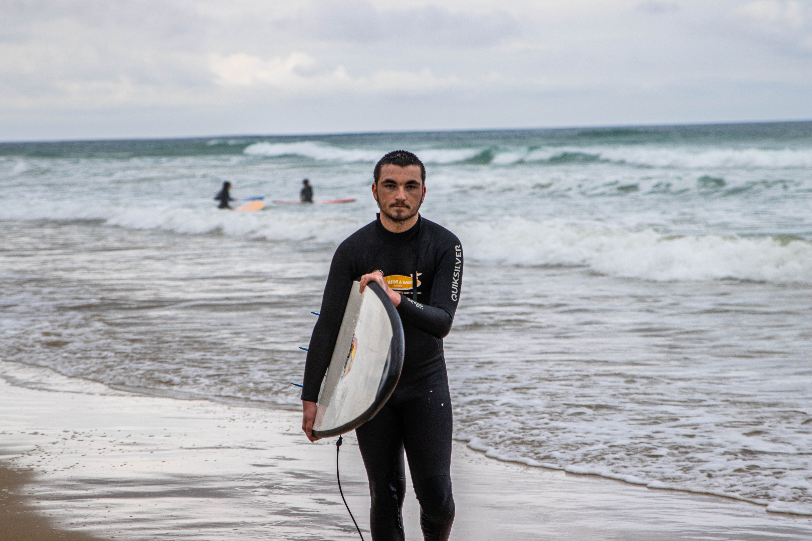

Hey there! I’m Alvis Gordon, a -year-old tech enthusiast, gamer, and proud father. My journey has been anything but ordinary. I’ve been in foster care since I was a baby, which has shaped who I am today—resilient, independent, and always striving to make the best of every situation.
About Me
Life took an incredible turn recently with the arrival of my son, Khaleel, who was born on February 20th, 2024. Becoming a dad has been the happiest moment of my life, and watching him grow each day fills me with joy and motivation. I have an amazing partner who stands by me through thick and thin, supporting me in everything I do. Together, we’re building a loving and supportive environment for Khaleel. I’ve always been passionate about surfing and gaming, but programming is where I truly found my groove. Whether I’m catching waves or writing code, I’m all about diving deep into what I love. Over the past few years, I’ve taught myself JavaScript and even built a Discord bot from scratch. It’s been an exciting journey, and I can’t wait to see where my skills take me next.
Living with high-functioning autism and ADHD presents its challenges, but it’s also a big part of what makes me who I am. I see the world differently, and that perspective fuels my creativity and problem-solving in unique ways. I’m constantly learning, growing, and pushing myself to achieve more. When I’m not coding or gaming, you’ll probably find me spending quality time with my family or hitting the waves. Balancing everything—parenthood, studies, and my passion for tech—can be a wild ride, but I wouldn’t have it any other way. Thanks for stopping by my corner of the web. I’m excited to share my journey with you!